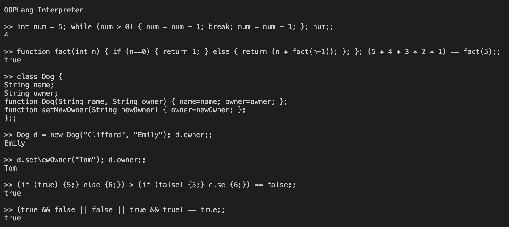

OOPLang
CS 4110, Fall 2020
For our final project, my partner and I built an interpreter from scratch for a custom object-oriented language similar to Java. Our intention was for the language to be less verbose and complex, but still support important features such as class inheritance. Below is a demo of our interactive interpreter.
Virtual Pomodoro
Intro to Backend Development, Fall 2020
My team and I created an iOS application that uses the Pomodoro technique to create virtual study sessions. Users can sign in with their Google account, customize their Pomodoro study session, and invite friends to join via a session code. Below are high fidelity mock-ups of our application.

NATE-QA
CS 3110, Spring 2019
For our midterm project, my team and I developed an OCaml chatbot that parses through a corpus of 100+ Wikipedia articles to answer questions related to the field of computer science. We utilized NLP/IR algorithms such as TF-IDF, Jaccard, and Cosine Similarity to identify answer & provide suggestions to typos in user queries. Below is a demo of its capabilities.